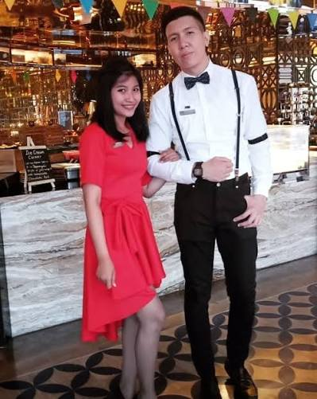
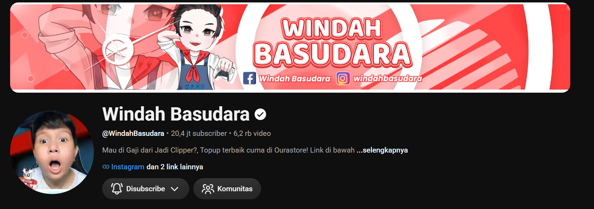
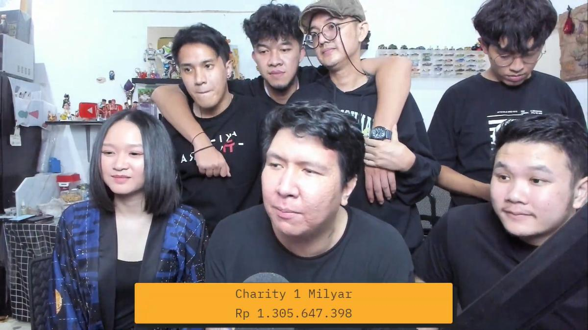

CREATIVE PORTFOLIO
W i n d a h B a s u d a r a
Content creator gaming yang dikenal dengan humor, energi positif, dan interaksi dekat bersama para penontonnya.

10M+
Subscribers
1000+
Videos
2018
Started Creating
∞
Entertainment
ABOUT THE CREATOR
More Than Just Gaming.
Windah Basudara merupakan content creator yang menghadirkan hiburan melalui gaming, live streaming, dan berbagai kegiatan sosial.
Gaya komunikasinya yang spontan, lucu, dan dekat dengan komunitas membuat setiap kontennya terasa lebih personal.
Discover More →MY PORTFOLIO
Creative Works

Channel YouTube
Membangun channel YouTube melalui konten gaming, live streaming, dan hiburan.
Visit Channel →
Charity
Menggalang dana dan membantu orang-orang yang membutuhkan melalui kegiatan sosial.
View Activity →Unique Personality
Memiliki karakter khas, humor spontan, dan hubungan yang dekat dengan komunitas.
Read Creative CV →